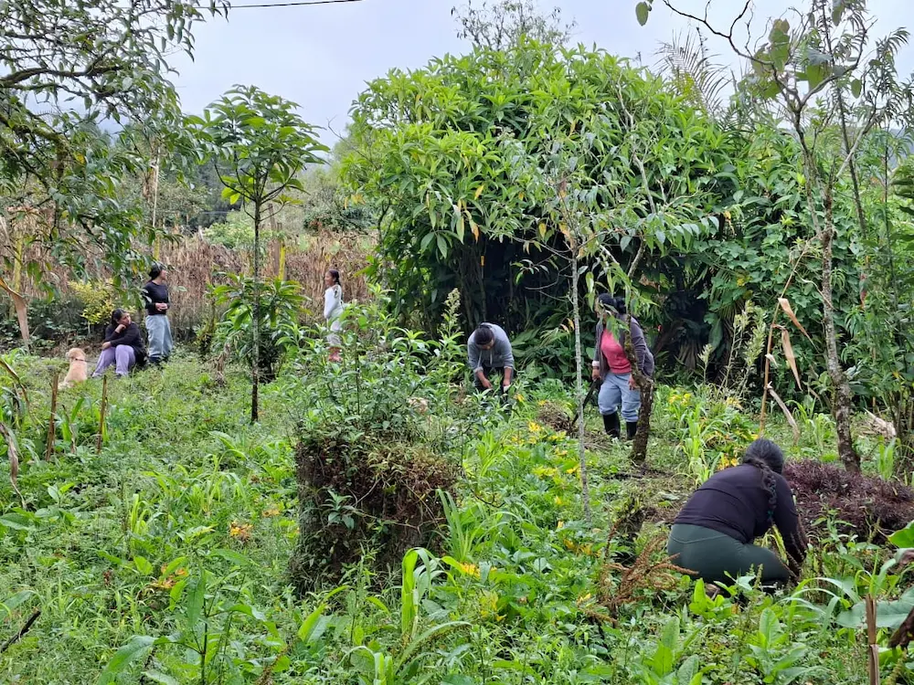
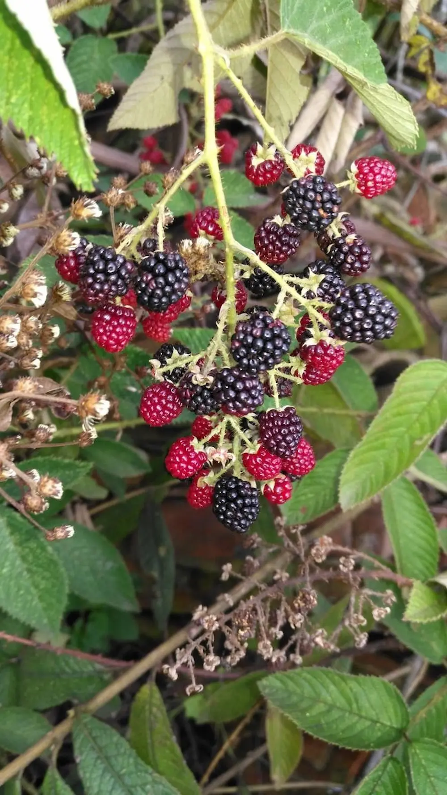
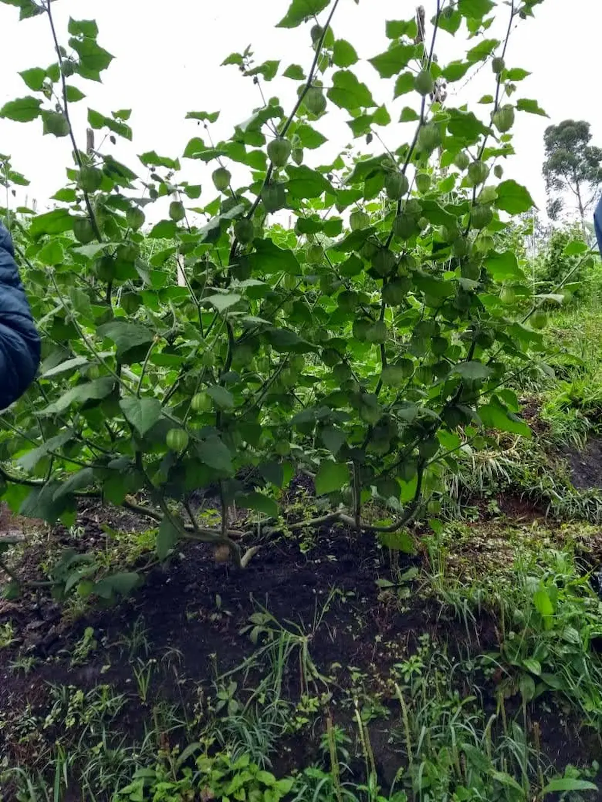
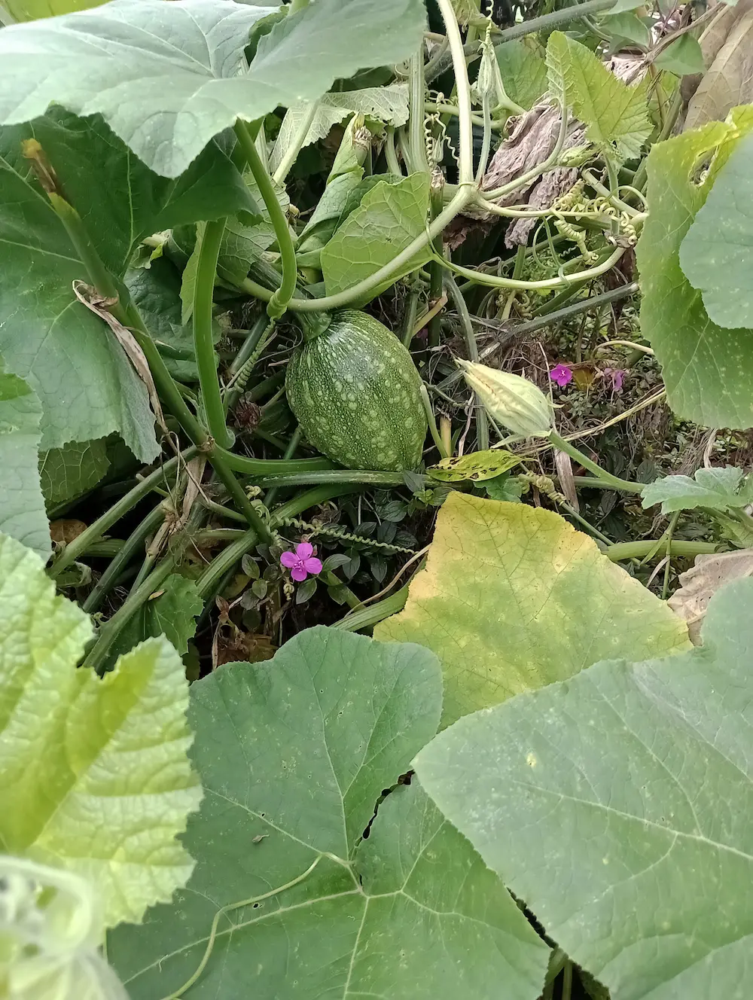
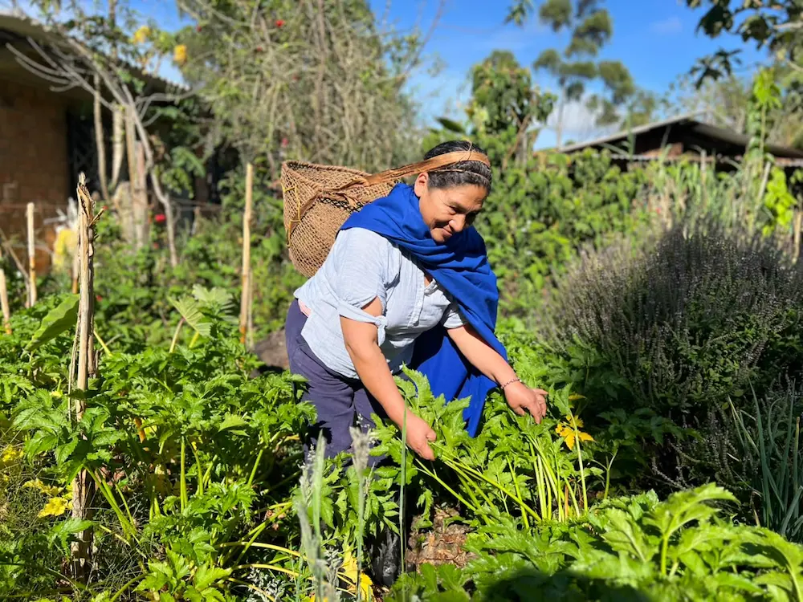
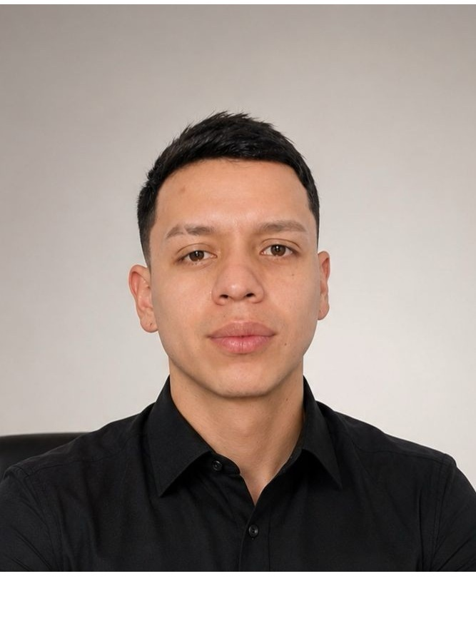
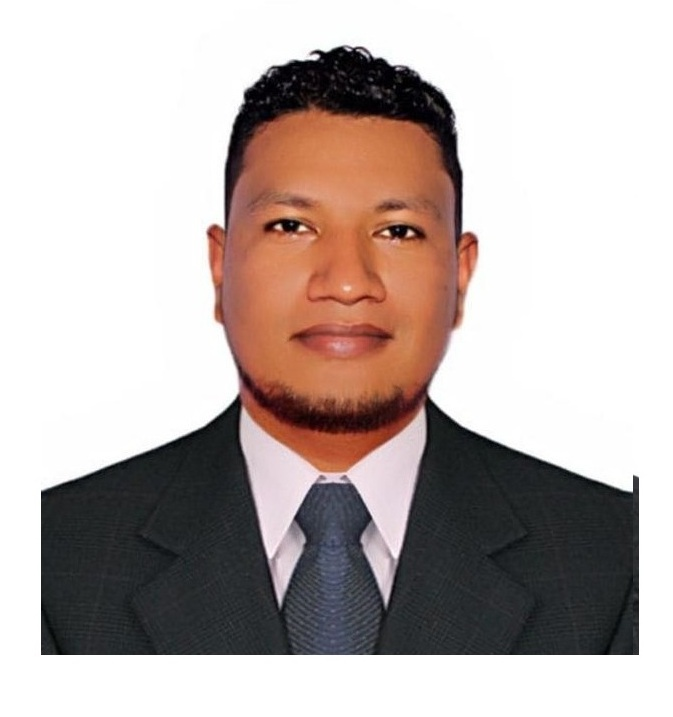

Amanda Chindoy
Puente directo entre el Valle de Sibundoy y el entorno digital. Transforma la identidad del territorio en interfaces cercanas y pensadas para las personas.

Las familias agricultoras de Putumayo producen cosechas orgánicas de la más alta calidad, pero carecen de visibilidad digital para competir en el mercado moderno. Nuestra meta fue romper este aislamiento, creando una vitrina digital competitiva para posicionar sus marcas y conectarlas con el comercio masivo.




Desarrollamos un e-commerce desacoplado y escalable que funciona como canal de venta directa para restaurantes nacionales y centraliza el primer contacto para exportaciones.
Somos un equipo de desarrolladores FullStack formados en Generation Colombia. Unimos ingeniería de software, diseño centrado en las personas y metodologías ágiles para crear soluciones digitales con impacto real. ¿Buscas talento para tu próximo proyecto? Conecta con nosotros.
Puente directo entre el Valle de Sibundoy y el entorno digital. Transforma la identidad del territorio en interfaces cercanas y pensadas para las personas.

Enfocado en experiencias web interactivas y rendimiento visual. Convierte requerimientos complejos en flujos ágiles e intuitivos para el usuario.

Apasionado por la lógica de negocio, la gestión de estado y las estructuras escalables. Desarrolla componentes dinámicos que aseguran fluidez en cada etapa de compra.

Orientada a la arquitectura modular, código limpio y consistencia visual. Integra diseño y desarrollo para construir aplicaciones web sólidas y fáciles de mantener.